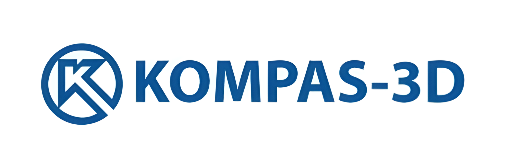

Работали мы в компас 3D и HTML
КОМПАС-3D – это российская импортонезависимая система трехмерного проектирования, ставшая стандартом для тысяч предприятий и сотен тысяч профессиональных пользователей. КОМПАС-3D широко используется для проектирования изделий основного и вспомогательного производств в таких отраслях промышленности, как машиностроение (транспортное, сельскохозяйственное, энергетическое, нефтегазовое, химическое и т.д.), приборостроение, авиастроение, судостроение, станкостроение, вагоностроение, металлургия, промышленное и гражданское строительство, товары народного потребления и т. д.
